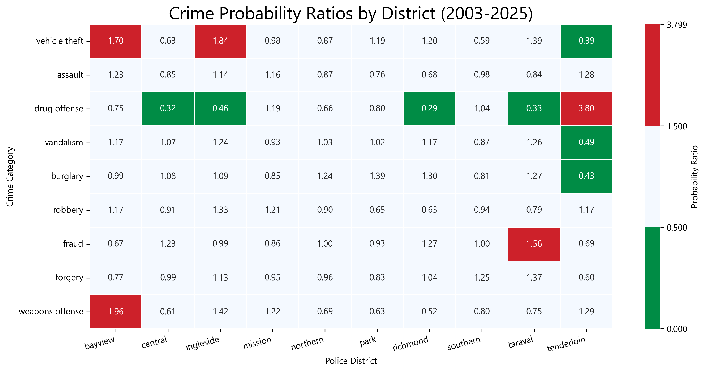
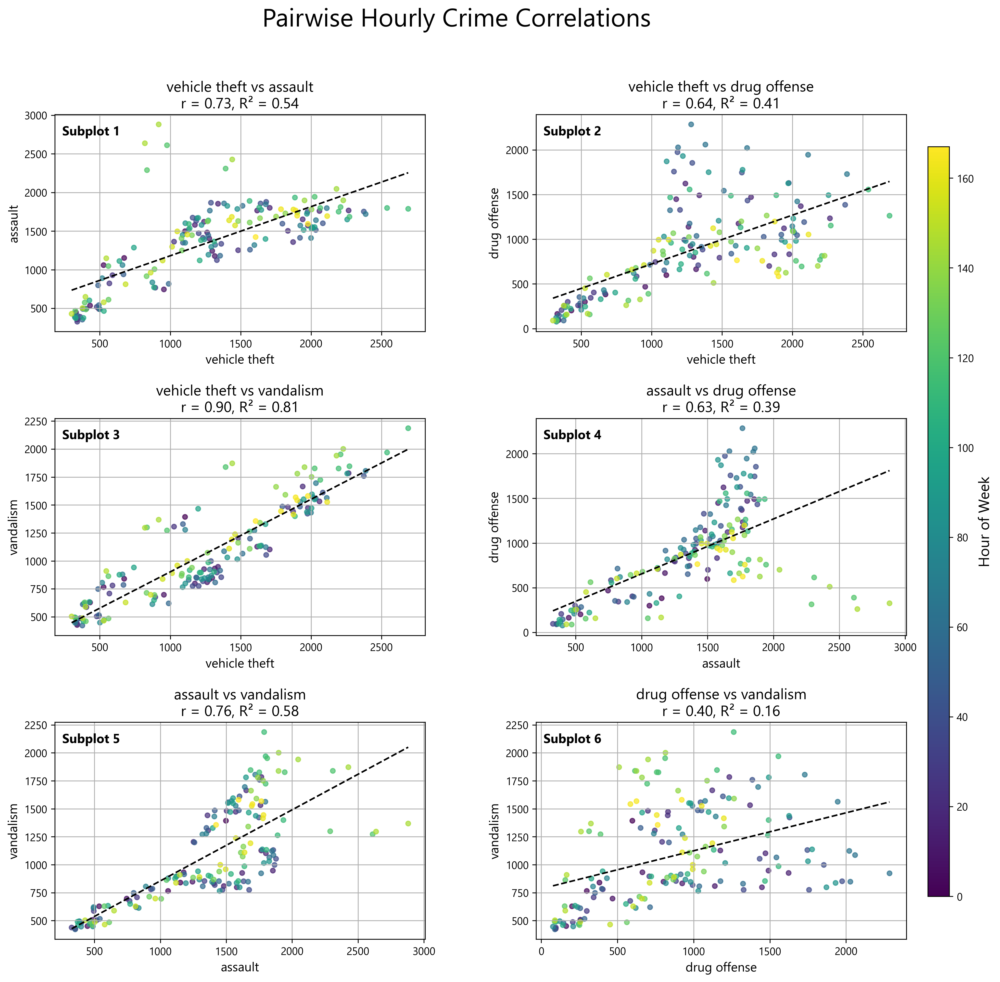

<!DOCTYPE html>
<html lang="en">
<head>
<meta charset="UTF-8">
<meta name="viewport" content="width=device-width, initial-scale=1.0">
<title>Crime Data Analysis | Portfolio</title>

<script src="https://cdn.tailwindcss.com"></script>
<script>
  tailwind.config = {
    theme: {
      extend: {
        colors: {
          bg: 'var(--bg-color)',
          surface: 'var(--surface-color)',
          clay: 'var(--clay-color)',
          slate: 'var(--slate-color)',
          muted: 'var(--muted-color)',
          border: 'var(--border-color)',
        },
        fontFamily: {
          sans: ['Outfit', 'ui-sans-serif', 'system-ui', 'sans-serif'],
          serif: ['Playfair Display', 'ui-serif', 'Georgia', 'serif'],
        }
      }
    }
  }
</script>

<style>
  @import url('https://fonts.googleapis.com/css2?family=Outfit:wght@300;400;500;700&family=Playfair+Display:wght@400;700&display=swap');

  :root {
    --bg-color: #FDF8F5;
    --surface-color: #FFFFFF;
    --clay-color: #E8B4A0;
    --slate-color: #3A3A3A;
    --muted-color: #A09890;
    --border-color: #F0E8E4;
    --grid-color: rgba(232, 180, 160, 0.06);
  }

  body { background-color: var(--bg-color); color: var(--slate-color); font-family: 'Outfit', sans-serif; overflow-x:hidden; }
  h1,h2,h3,h4,h5,h6 { font-family: 'Playfair Display', serif; }
  .tag { font-size: 10px; font-weight:700; letter-spacing:0.25em; text-transform:uppercase; color: var(--clay-color); }
  .glass-panel { background: var(--surface-color); border: 1px solid rgba(0,0,0,0.05); border-radius:32px; box-shadow:0 4px 30px rgba(0,0,0,0.02); }
  .instruction-box { background: var(--surface-color); border: 1px solid rgba(0,0,0,0.05); border-radius:24px; }

  .mountain-overlay { position:fixed; bottom:0; left:0; width:100%; height:100%; background:url("data:image/svg+xml,%3Csvg xmlns='http://www.w3.org/2000/svg' viewBox='0 0 1440 320'%3E%3Cpath fill='%23E8B4A0' fill-opacity='0.04' d='M0,160L120,186.7C240,213,480,267,720,261.3C960,256,1200,192,1320,160L1440,128L1440,320L1320,320C1200,320,960,320,720,320C480,320,240,320,120,320L0,320Z'%3E%3C/path%3E%3C/svg%3E") no-repeat bottom; background-size:cover; z-index:-1; pointer-events:none; opacity:1;}
  .progress-bar { position:fixed; top:0; left:0; height:4px; background:var(--clay-color); width:0%; z-index:50; }
</style>

<script type="importmap">
  { "imports": { "react": "https://esm.sh/react@18.2.0", "react-dom/client": "https://esm.sh/react-dom@18.2.0/client", "framer-motion": "https://esm.sh/framer-motion@11.0.3?external=react,react-dom" } }
</script>
<script src="https://unpkg.com/@babel/standalone/babel.min.js"></script>
</head>

<body>
<div id="root"></div>

<script type="text/babel" data-type="module">
import React from 'react';
import { createRoot } from 'react-dom/client';
import { motion, useScroll, useTransform, useSpring } from 'framer-motion';

const ProgressBar = () => {
  React.useEffect(() => {
    const handleScroll = () => {
      const scrollTop = document.documentElement.scrollTop;
      const scrollHeight = document.documentElement.scrollHeight - window.innerHeight;
      document.getElementById('progressBar').style.width = (scrollTop / scrollHeight) * 100 + '%';
    };
    window.addEventListener('scroll', handleScroll);
    return () => window.removeEventListener('scroll', handleScroll);
  }, []);
  return <div id="progressBar" className="progress-bar"></div>;
};

const Parallax = () => {
  const { scrollYProgress } = useScroll();
  const smooth = useSpring(scrollYProgress, { damping: 20, stiffness: 100 });
  const mountainY = useTransform(smooth, [0,1], ['0%','20%']);
  return <motion.div style={{y: mountainY}} className="mountain-overlay"></motion.div>;
};

const Navbar = () => (
  <nav className="p-8 sticky top-0 bg-surface/80 backdrop-blur-md z-50">
    <a href="../index.html" className="tag hover:text-clay transition flex items-center">
      ← Portfolio
    </a>
  </nav>
);

const Section = ({title, children}) => (
  <motion.section initial={{opacity:0,y:30}} whileInView={{opacity:1,y:0}} viewport={{once:true}} className="mb-40">
    {children}
  </motion.section>
);

const App = () => (
  <>
    <ProgressBar />
    <Parallax />
    <Navbar />
    <main className="max-w-5xl mx-auto px-6 py-20">
      <header className="mb-32">
        <span className="tag mb-4 block">Case Study // Data Analysis</span>
        <h1 className="text-5xl md:text-7xl font-bold mb-12 tracking-tight leading-tight">
          Urban Crime <br />
          <span className="text-clay">Patterns & Evolution</span>
        </h1>
        <p className="text-xl text-muted font-light leading-relaxed max-w-2xl">
          Analysis of 20 years of public crime data combining spatial distribution and temporal evolution to identify behavioral patterns.
        </p>
      </header>

      {/* I. Spatial Patterns */}
      <Section>
        <h3 className="tag mb-8 font-bold">I. Spatial Patterns</h3>
          <div className="bg-[#F0E8E4] p-4 rounded-2xl shadow-2xl border border-border mb-12">
            
        </div>
        <h4 className="text-2xl font-bold mb-6">Geographic Concentration</h4>
        <p className="text-muted leading-relaxed mb-8">
          Crime events are not uniformly distributed. High-density zones emerge consistently, indicating structural patterns linked to urban layout and activity levels.
        </p>
        <p className="text-muted text-lg leading-relaxed border-l-2 border-clay pl-8">
          The Tenderloin district stands out as an anomaly, where pedestrian density reduces vehicle theft but concentrates drug-related incidents.
        </p>
      </Section>

      {/* II. Temporal Evolution */}
      <Section>
        <h3 className="tag mb-8 font-bold">II. Temporal Evolution</h3>
        <div className="max-w-3xl mx-auto mb-16 grid grid-cols-1 md:grid-cols-2 gap-4 text-left">
          <div className="instruction-box p-6 flex items-center space-x-4">
            <div className="w-10 h-10 rounded-full bg-clay/10 flex items-center justify-center text-clay">▶</div>
            <p className="text-[11px] font-bold uppercase tracking-widest text-slate-500">Use animation to explore changes over time</p>
          </div>
          <div className="instruction-box p-6 flex items-center space-x-4">
            <div className="w-10 h-10 rounded-full bg-clay/10 flex items-center justify-center text-clay">☰</div>
            <p className="text-[11px] font-bold uppercase tracking-widest text-slate-500">Toggle categories to isolate patterns</p>
          </div>
        </div>
        <div className="bg-surface rounded-3xl overflow-hidden shadow-2xl border border-border mb-12">
          <iframe src="../visualizations/yearly-animation.html" className="w-full h-[650px] border-none"></iframe>
        </div>
        <p className="text-muted text-lg leading-relaxed border-l-2 border-clay pl-8 mb-12">
          A clear behavioral shift appears between 2019 and 2022: interpersonal crimes decrease, while property-related incidents increase in low-occupancy areas.
        </p>
      </Section>

      {/* III. Correlation Analysis */}
      <Section>
        <h3 className="tag mb-8 font-bold text-clay">III. Correlation Analysis</h3>
          <div className="bg-[#F0E8E4] p-4 rounded-2xl shadow-2xl border border-border mb-12">
            
        </div>
        <div className="p-12 glass-panel relative overflow-hidden">
          <div className="absolute left-0 top-0 bottom-0 w-1 bg-clay/30"></div>
          <h4 className="font-bold text-clay uppercase text-[10px] mb-4 tracking-[0.3em]">Technical Insight</h4>
          <p className="text-xl font-medium text-slate-800 leading-relaxed">
            Strong correlation between vandalism and vehicle theft suggests that property damage is often part of the theft process rather than an independent event.
          </p>
        </div>
      </Section>

    </main>
  </>
);

createRoot(document.getElementById('root')).render(<App />);
</script>

</body>
</html>